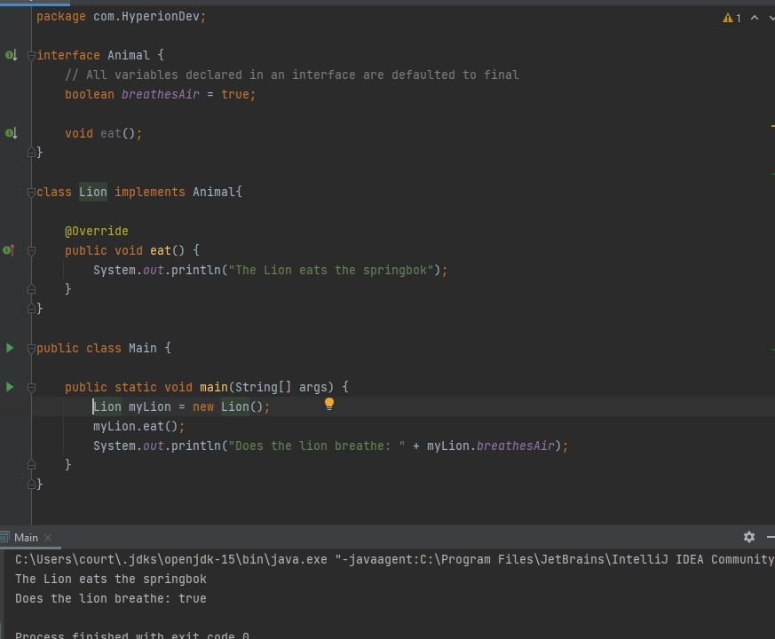
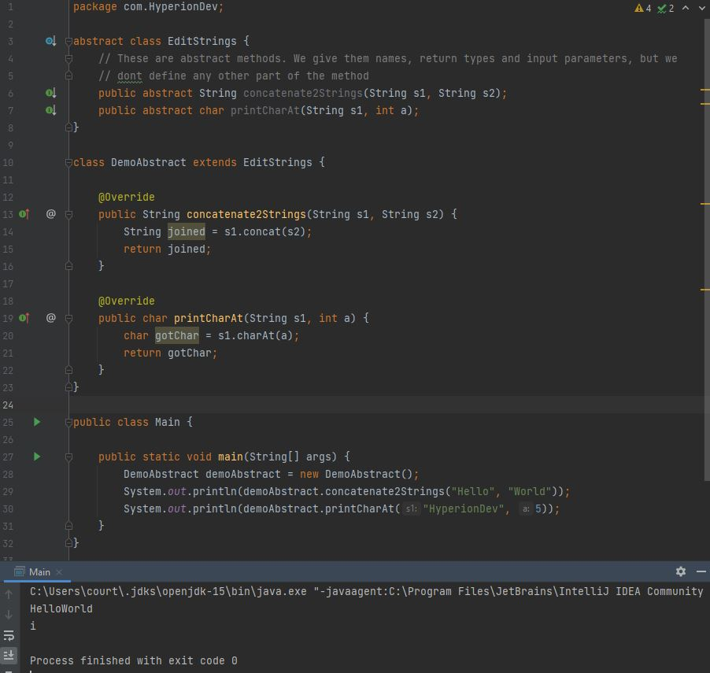

Courtney Marchesi BlogThis now exists |
| Interfaces are like blueprints of a class, instead of building the same class over and over again, you can rather use the blueprint to make sure that each class is just the way you designed it. Using one then, as a newbie software developer, is not a hard choice. Using an interface can help keep a programme standardised and make sure that the methods and variables declared in the interface are used in each class and are not forgotten by said newbie developer as they learn the ropes. |
| The core differences of abstract classes and interfaces can be found in the table below: |
| Abstract Classes | Interfaces | |
| Method | Abstract Classes can have concrete and abstract methods | Has abstract methods. SInce Java 8 can have default and static methods |
| Inheritance | Abstract Classes do not have multiple inheritance | Interfaces support multiple inheritance |
| Variables | Abstract classes have all variable types. e.g final and non final | Interfaces have only static and final variables |
| Implementation | Abstract Classes can implement an interface | Interfaces cannot implement any classes |
| Keyword | Uses the 'abstract' keyword | Uses 'interface' keyword |
| Extending | Abstract classes can extend another Java class and can implement multiple interfaces | Interfaces can only extend other interfaces |
| Access Modifiers | Abstract classes can have access modifiers like private or protected | All interfaces are public |
| Example | private abstract class Animal { private abstract void eat(); } | public interface Animal { void eat(); } |
| Abstraction as a concept is the defined as a way to hide the how of your functionality and only get the what of the functionality. Perhaps this is better explained using an example: If you had a programme that converted celcius to farenheit, what the user had to do was input either the degrees in celcius or farenheit and would receive the output in the corresponding alternate degrees. The what of the programme would be the conversion of the given value to the other temperature. But the how of what is done would be completely hidden from the user. The boileroom code that is hidden would be total abstraction |
| Using Your New Interface |
| Firstly let's get this out of the way, interface cannot be instantiated as they are not classes, nor do they have constructors, the variables declared in an interface are static or final, they can only be those variables. Instead we implement an interface instead. See the below code snippet to see how to create and implement an interface: |
|  |
| The Method Abstract |
| Abstract Methods are methods with out any body. They just have the method signature and then nothing else below. See below code snippet for bit more understanding: |
|  |
| Overriding Private Methods in Java |
| Like most coding languages, Java is constantly improving and from Java 9 the ability to add private methods and private static methods in interfaces has been possible. This improves code re-use as all classes implementing that interface could share that code, but it wouldnt expose the private method to any of its implementing classes. So while you cant override this method, it greatly helps keep things standard over the entire set of classes needing to use that interface, without you have to override the same method with identical code over all of the classes. This also helps with the update of the method, you would only need to change it once in the interface, rather than innummerable times across all the classes |
| References |
|